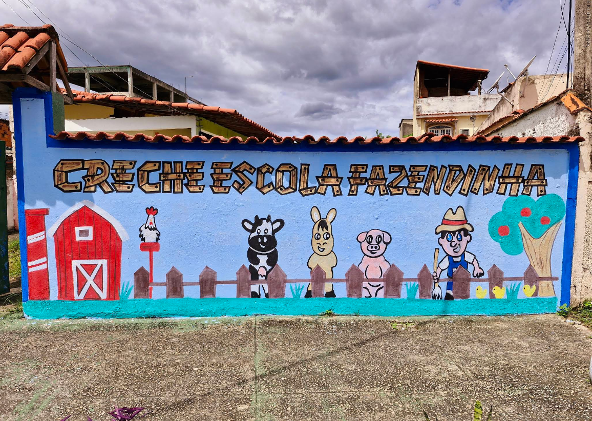

Ambiente acolhedor
Visual leve, delicado e pensado para transmitir segurança às famílias.
A Creche e Escola Fazendinha oferece um ambiente afetuoso, delicado e seguro, com proposta voltada ao desenvolvimento infantil desde os primeiros meses de vida.
Em Senador Camará, Rio de Janeiro, acolhemos cada fase da infância com atenção, cuidado e muito carinho.
Nosso site foi pensado para transmitir confiança às famílias e facilitar o primeiro contato com a escola. A proposta visual une elementos delicados, cores naturais e um tema inspirado na fazenda, criando uma identidade acolhedora e memorável.
Aqui, cada etapa da infância é valorizada com atenção ao bem-estar, à rotina e ao desenvolvimento das crianças.
Visual leve, delicado e pensado para transmitir segurança às famílias.
Identidade visual inspirada na natureza e no universo lúdico da infância.
Botões estratégicos para facilitar o contato e gerar novas matrículas.
Comunicação clara para famílias da região de Senador Camará.
Uma estrutura pensada para acompanhar o crescimento dos pequenos em cada etapa.
A partir de 4 meses, com atenção especial ao cuidado, acolhimento e adaptação.
Rotina com estímulos adequados ao desenvolvimento, à socialização e às descobertas.
Preparação infantil com atividades voltadas à aprendizagem, autonomia e convivência.
A Fazendinha une cuidado, rotina, acolhimento e uma comunicação próxima para que cada família se sinta segura desde o primeiro contato.
Um ambiente preparado para receber as crianças com carinho, atenção e segurança em cada fase da infância.
Vivências pensadas para estimular socialização, autonomia, criatividade e aprendizado de forma leve e natural.
Contato fácil pelo WhatsApp, apresentação clara da escola e mais proximidade com os responsáveis.
Espaços pensados para a rotina infantil, com atmosfera leve, acolhedora e adequada para cada momento do dia.

A proposta da Fazendinha valoriza atividades que tornam a infância mais rica, afetiva e cheia de experiências.
Estamos prontos para apresentar nossa proposta, tirar dúvidas e agendar uma visita para você conhecer de perto a nossa escola.
Fale com a nossa equipe e receba informações sobre turmas, estrutura e matrícula.